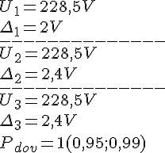
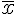
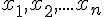
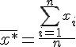
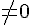
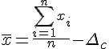
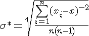

Обработка результатов измерений
Одно значение измеряемой величины, полученное в результате измерительного эксперимента называется наблюдением.
Окончательный результат измерения получают путем обработки нескольких наблюдений.
Процесс(процедура) обработки заключается в следующем:
Пример записи погрешностей:

Правильный вариант - 2 и 3;
Самый правильный - 3;
Самый частый - 2;
1 неправильный из-за формы записи (если результат имеет 1 знак после запятой то и погрешность должна иметь 1 знак после запятой).
Однократные измерения - получение окончательного результата по одному разовому наблюдению.
Многократные прямые измерения
При такого рода измерениях возможны 2 постановки задачи
В технических измерениях 1-й вариант наиболее распространенный
Допустим, необходимо определить параметр  при измерении одной и той же неизменной величины. При этом получен ряд значений . Тогда в случае отсутствия систематической погрешности искомая величина(её оценка) будет находиться по формуле 
Если же систематическая составляющая погрешности , тогда формула будет 
!!!Если систематическая составляющая неизвестна то последнее уравнение не имеет корректного решения!!!
СКО:
